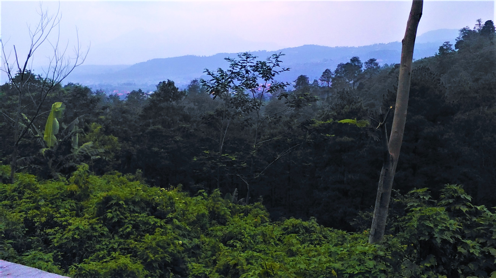
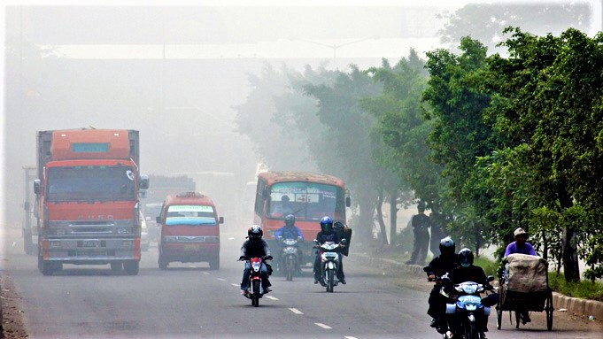
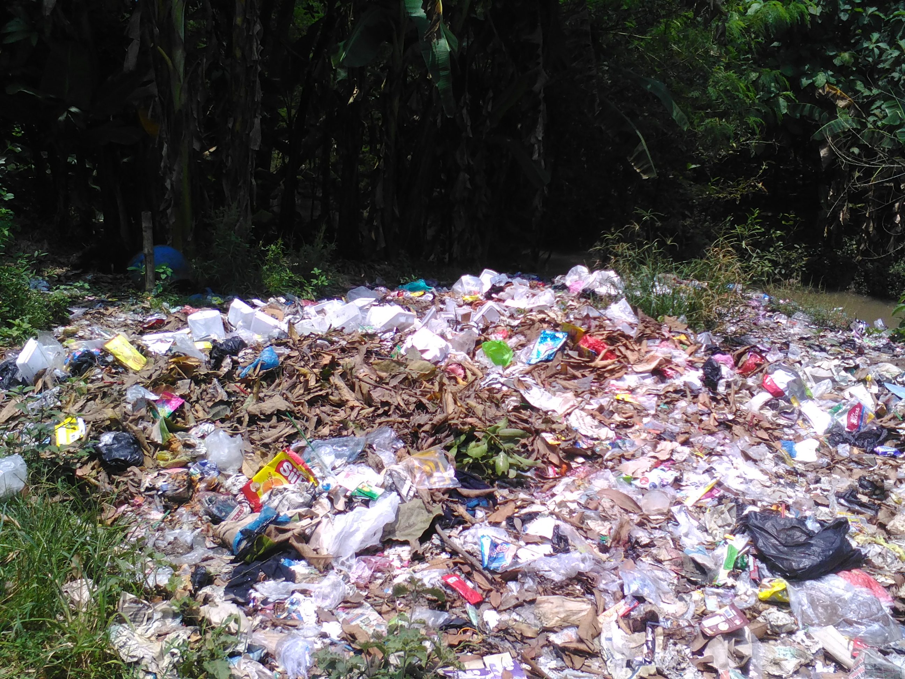

Go Green
Go Green adalah tindakan penyelamatan bumi yang saat ini sudah mengalami kerusakan dan pemanasan global akibat dari ulah diri kita sendiri. Go Green dapat disebut pula dengan “Penghijauan Kembali”.Baca

Manfaat Pohon Bagi Kehidupan Manusia
Berbicara soal pohon, pohon bagi kehidupan mahluk hidup sangatlah penting, Sebagai manusia sudah menjadi tanggung jawab kita untuk merawat bumi kita ini.Baca

Mengurangi Polusi Udara
kita saat ini menjadi sangat gersang dan kekurangan oksigen. Penyebabnya seperti yang kita ketahui yaitu, polusi udara, penebangan hutan secara liar, efek rumah kaca, banyaknya pembangunan, dan lain sebagainya.Baca

Penerapan 5R
Pertama adalah Recycle, ini merupakan dasar dari aktivitas mendaur ulang sesuatu atau mengolah kembali suatu barang yang sudah tidak digunakan agar bisa dimanfaatkan kembali.Baca

Penyebab Banjir
Penyebab utama berasal dari curah hujan yang tinggi. Jika hujan besar turun terus menerus tentu air tidak akan langsung masuk ke saluran pembuangan air, melainkan air yang turun akan menjadi genangan.Baca
Selamatkan Bumi Kita
Bumi merupakan planet yang indah akan kekayaan alam dan makluknya, semua makluk akan sedih jika tempat tinggalnya rusak, begitu pula dengan bumi, jika bumi kita dirusak secara sengaja ataupun...Baca

Go Zero Waste
Zero Waste, pernah dengar kata ini ?, Zero Waste adalah mulai dari produksi sampai berakhirnya suatu proses produksi. produksi sampah, atau diminimalisir terjadinya sampah.Baca
<
>
Ikuti Kami